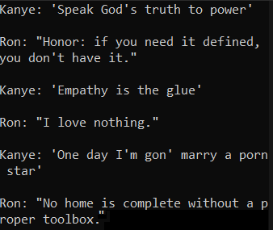
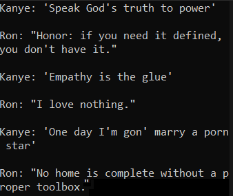

More Projects
Finding Furthest Distance
This .NET Console App allows users to upload a CSV file containing names of locations with latitude and longitude coordinates. The file is converted into an array of location objects. A nested for loop iterates through each location and measures distance to every other location. Once complete, the 2 furthest locations and their distance are displayed.
Celebrity Dialogue Simulation
This .NET Console App allows users to choose 2 conversants from a list of celebrities. API GET requests containing quotes by each celebrity are converted to strings using a JSON parser. Those strings are displayed in alternating turns, as dialogue, with the speaker labeled.
 

Lazy Meteorologist
This .NET Console App asks users to input any city in the world. A GET request is sent to the OpenWeatherMap API and converted to a string with a JSON parser. Individual data points are isolated and converted to standard system units. A detailed weather update script is created using string interpolation.